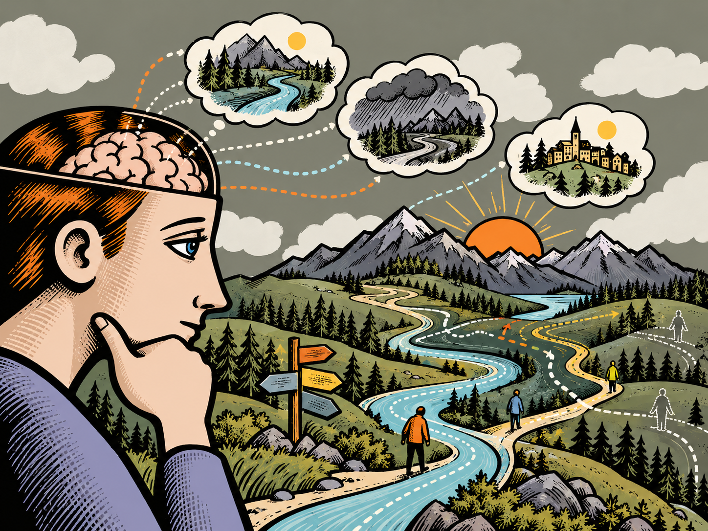
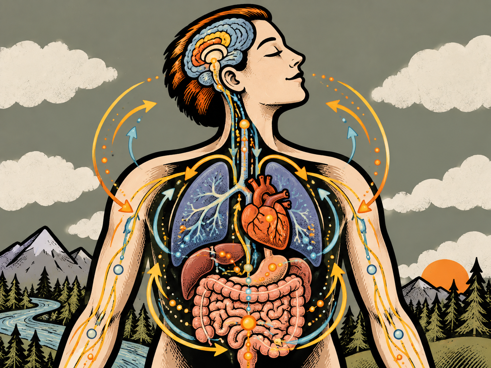
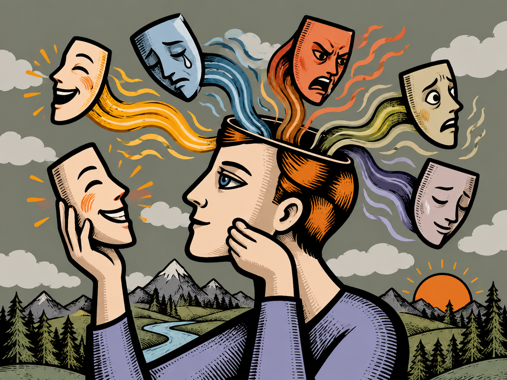
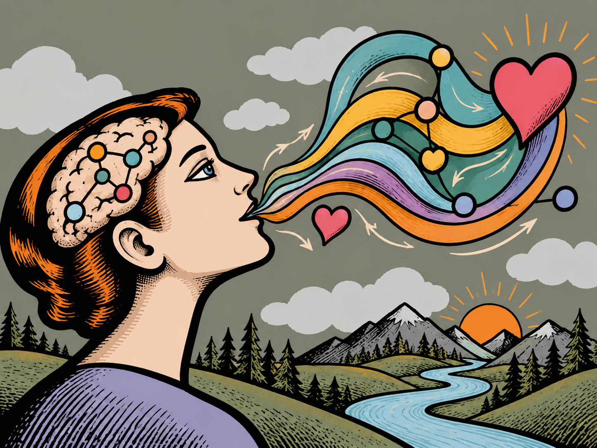
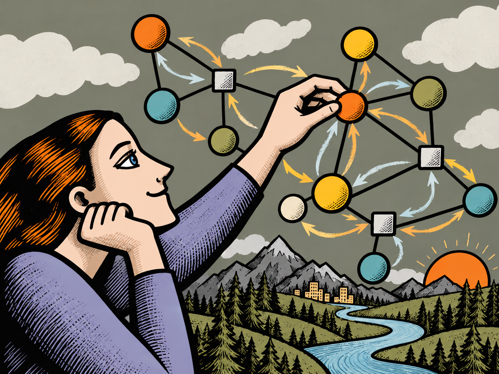
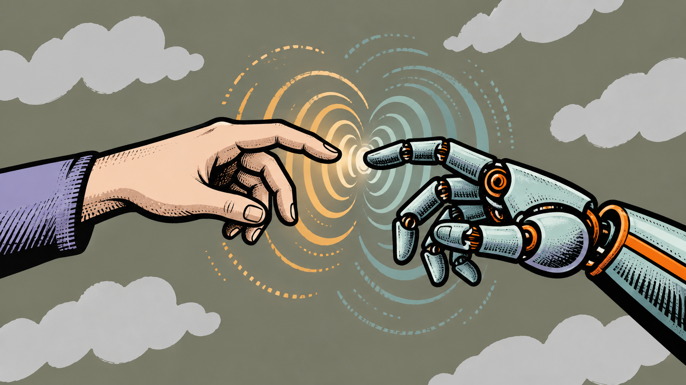
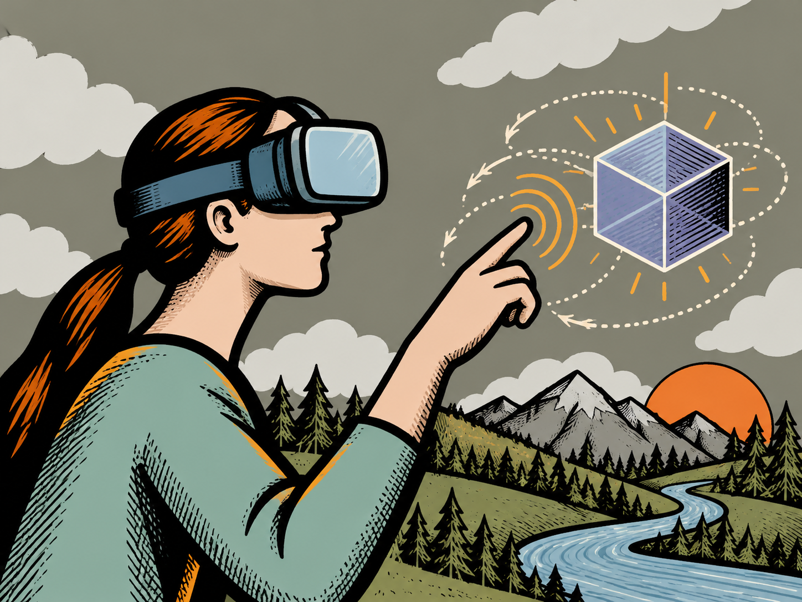

Active Inference
Generative models, POMDPs, message passing, precision and adaptive decision-making.
→Four connected perspectives on the mind–body continuum. Click a domain to jump to and filter the research below.

Generative models, POMDPs, message passing, precision and adaptive decision-making.
→
Physiological inference, allostatic regulation, bodily signals and adaptive control.
→
Affective charge, empathic interfaces, emotional inference and multimodal AI.
→
Embodied interaction, vibrotactile feedback, sonoception and human–machine coordination.
→All 12 research artifacts from the original site are restored here.

How higher-order beliefs about model fitness can shape precision, policy selection and adaptive behavioural switching.
Stress, adaptive set-points and learning-rate modulation under an active inference framework.

A visual introduction to structured probabilistic inference and reusable computational graphs.
Unifying perception, learning and action under a generative model of behaviour.

Modulating interoceptive pathways through acoustic and vibrotactile stimulation.

Vibrotactile feedback, tactile encoding and closed-loop human–machine interaction.

Multi-level latent representations and hierarchical generative structure for complex observations.
A flexible framework for modelling uncertainty in cognitive and affective processes.
A neurobiological and clinical presentation on emotion regulation, allostatic load biomarkers and cumulative physiological burden.
A review of non-invasive molecular monitoring, materials architecture, microfluidics and AIoT integration in wearable sensing.
An educational walkthrough of complex systems, conditional independence and Markov blankets in brain and adaptive-system modelling.
An educational walkthrough of empathic voice interaction, emotional intelligence, low-latency multimodal systems and configuration workflows.
From biological regulation, to affective experience, to belief updating and intelligent action in the world — all connected through a common computational framework.
Explore domains ↑